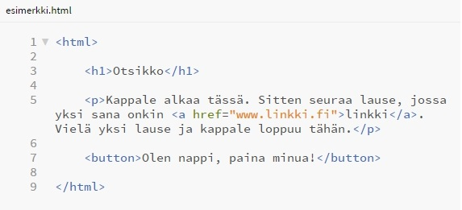

Ei hätää, kuvataidediplomin arvioijat
HTML ja CSS ovat erittäin helppoja kieliä ymmärtää! Kerron teille tarkasti ja perusteellisesti, miten tein teokseni ja mitä jokainen sana teoksen koodissa tekee. Yritän myös välittää, miksi rakastuin koodaukseen ja toivottavasti lukemisen jälkeen teillekin avautuu tämä ihana koodauksen maailma, josta ei arjessa tulisi edes ajateltua.
HTML ja CSS pähkinänkuoressa
HTML on merkintäkieli, joka kertoo selaimelle mitä sivulla on. HTML voi sanoa selaimelle "Tämä on otsikko!" tai "Tämä on kappale!" tai vaikkapa "Tämä on linkki". Vaikkei se osaa sanoa mitään muuta kuin "Tämä on...", vaihtoehtoja mitä tämä on on valtavasti. Alla olevassa kuvassa HTML sanoo "Tämä on otsikko (h1), tämä on kappale (p), jonka sisällä on linkki (a), joka vie osoitteeseen www.linkki.fi, tämä on nappi (button)."
Kun selain on kuunnellut kaikki HTML:n ohjeet, se näyttää ne selaimen käyttäjälle erittäin yksinkertaisessa muodossa. Puhdas HTLM näyttää selaimessa tältä:

Onneksi olkoon! Tiedät nyt kaiken, mitä pitää tietää HTML:stä ymmärtääkseen mistä on puhe.
Tietysti, jotta koodia pystyisi kirjoittamaan, pitää osata paljon enemmän asioita ja sääntöjä, sekä yksinkertaisinkin toimiva sivu on suunilleen 100 riviä pitkä